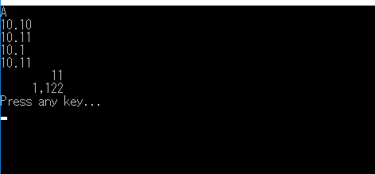

[C#] 数字フォーマット(お金表示及び小数点以下表示)
こんにちは。明月です。
この投稿はC#で数字フォーマット(お金表示及び小数点以下表示)に関する説明です。
我々がプログラム上で数を扱えばintやdouble、decimalのデータタイプで数を使います。その中で計算はおそらくお金と関係があることが多くないかと思います。
でも、お金を計算した結果を出力する時に単純に数だけ表現すると見づらいことになります。特に億や兆単位までなれば行くと間違って読んで間違って判断する可能性もあります。
数を間違って読むことはお金の単位は100万円ですが、コンマなしで1000000円のことに出力されたら一目で100万円に認識するのが難しいことです。つまり1000万円のことで誤解することがあります。
１億の場合は100000000 です。
そのため、我々は誤解しないようにコンマを表示して数の単位を区分します。
static class Program
{
//実行関数
static void Main(string[] args)
{
// Decimalタイプで１億のデータを格納した。
Decimal data = 100000000;
// フォーマットは数字のデータタイプで「ToString」関数で使える。
// 0が3桁単位でコンマを入れてお金を表示する。
Console.WriteLine(data.ToString("#,##0"));
Console.WriteLine("Press any key...");
Console.ReadKey();
}
}
上の例をみれば変数に1億を格納して「#,##0」のフォーマットで出力フォーマット(ToString関数)を設定してお金形式で表示しました。
エクセルを使ったことがある方なら数字フォーマット形式を知るかもしりません。数字を表現することで「0」と「#」があります。
この差は「0」の場合は数字データが当該な桁数でデータがなくても「0」を表示することだし、「#」の場合は表示しないことです。
すなわち、フォーマットを「0,000」に設定して「1」のデータを出力すると下記の結果が出力します。
数字は基本「0」と「#」で表現しますが、その以外の表現を説明します。
static class Program
{
// 実行関数
static void Main(string[] args)
{
// 16進数に変換
Console.WriteLine(String.Format("{0:X}", 10));
// 小数点2桁まで表示(小数点以下2桁まで値が無ければ0で表示)
Console.WriteLine(String.Format("{0:0.00}", 10.1d));
Console.WriteLine(String.Format("{0:0.00}", 10.111111111111d));
// 小数点以下2桁まで表示
Console.WriteLine(String.Format("{0:0.##}", 10.1d));
Console.WriteLine(String.Format("{0:0.##}", 10.1111111111111111111d));
// コンマを利用して桁数を表示、総10桁基準で空欄を表示する。
Console.WriteLine(String.Format("{0,10:#,##0}", 11));
Console.WriteLine(String.Format("{0,10:#,##0}", 1122));
Console.WriteLine("Press any key...");
Console.ReadKey();
}
}

数字フォーマッティングは「ToString」がよく使いますが、状況によってString.Formatを利用する時もあります。
CultureInfoクラスを利用してお金を表示する方法もあります。CultureInfoはシステムによって地域別お金を表示する方法です。つまり日本なら日本の形式でアメリカならアメリカタイプに表示する機能です。
static class Program
{
// 実行関数
static void Main(string[] args)
{
// 変数に1億のデータを格納する。
Decimal data = 100000000;
// 日本のお金タイプに設定する。
NumberFormatInfo format = new CultureInfo("ja-JP", false).NumberFormat;
// お金を表示したいなら「c」を、ただコンマだけの表示なら「n」を入れる。
Console.WriteLine(data.ToString("n",format));
// システムのlocation設定によって設定される数字フォーマット
format = CultureInfo.CurrentCulture.NumberFormat;
// お金を表示したいなら「c」を、ただコンマだけの表示なら「n」を入れる。
Console.WriteLine(data.ToString("c", format));
Console.WriteLine("Press any key...");
Console.ReadKey();
}
}
ここまでC#で数字フォーマット(お金表示及び小数点以下表示)に関する説明でした。
ご不明なところや間違いところがあればコメントしてください。
- [C#] EMailを送信する方法(System.Net.Mail)2020/04/22 19:00:42
- [C#] ini環境ファイルを使う方法2020/04/22 00:09:39
- [C#] 環境設定ファイルを扱う方法(System.Configuration)2020/04/20 19:37:57
- [C#] Reflectionを利用してクラス複製する方法2020/04/17 00:34:33
- [C#] XMLをXPathを利用してデータを取得する方法2020/04/16 00:47:17
- [C#] NSoupライブラリを利用してXMLとHTMLをパーシングする方法2020/04/14 19:34:15
- [C#] 日付フォーマット2020/04/09 20:53:20
- [C#] ログライブラリ(log4net)を設定する方法2020/04/08 13:04:22
- [C#] Zipの圧縮ファイルを解凍するコードを作成する方法2020/04/07 11:17:44
- [C#] Zip圧縮コードを作成する方法2020/04/06 14:56:13
- [C#] 数字フォーマット(お金表示及び小数点以下表示)2020/04/03 00:38:37
- [C#] コマンド(cmd)を実行する方法(Processクラス)2020/03/31 07:15:40
- [C#] FTPに接続してファイルダウンロード、アップロードする方法2020/03/27 19:20:14
- [C#] HttpWebRequestを利用してウェブページを読み込みする方法2020/03/27 00:23:19
- [C#] Base64のエンコード、デコードする方法2020/03/26 02:19:50
- [C#] 45. ネットワークソケット通信(Socket)を使い方2021/10/06 19:06:25
- [C#] 44. ファイル(FileInfo)とディレクトリ(DirectoryInfo)を扱い2021/10/05 19:29:34
- [C#] 43. ストリーム(Stream)とバイナリ(byte[])、エンコード(Encoding)、そしてusingを使い方とIDisposableインターフェース2021/10/04 18:33:04
- [C#] 42. ファイルを扱い(IO)とファイルメタデータ(FileInfo)を使い方2021/10/01 20:10:21
- [C#] 41. Taskクラスとasync、awaitを使い方2021/10/01 18:59:14
- [Javascript ] WebのFull calendar(スケジュールカレンダー)の使い方法2021/07/15 21:35:36
- [Java] 56. Web serviceのサーブレット(Servlet)で初期化作業(properties設定)2021/07/02 17:10:36
- [Java] 55. Spring frameworkに文字化けを解決する方法(Encoding設定)2021/06/30 16:37:16
- [Java] 54. Spring frameworkでWeb filterを使う方法2021/06/29 18:25:12
- [Java] 53. ウェブサービス(Web service)でエラーページを処理する方法2021/06/25 13:35:54
- [Design pattern] 1-3. ファクトリメソッドパターン(Factory method pattern)2021/06/23 19:45:37
- [Java] WebSocketでチャット履歴をローディングする方法2021/06/15 18:34:45
- [Java] WebSocketを利用してユーザ(サイト運用者)が他のユーザとチャットする方法2021/06/15 17:20:08
- [Design pattern] 1-2. ビルダーパターン(Builder pattern)2021/06/11 19:06:28
- [Design pattern] 1-1. シングルトンパターン(Singleton pattern)2021/06/09 19:40:05